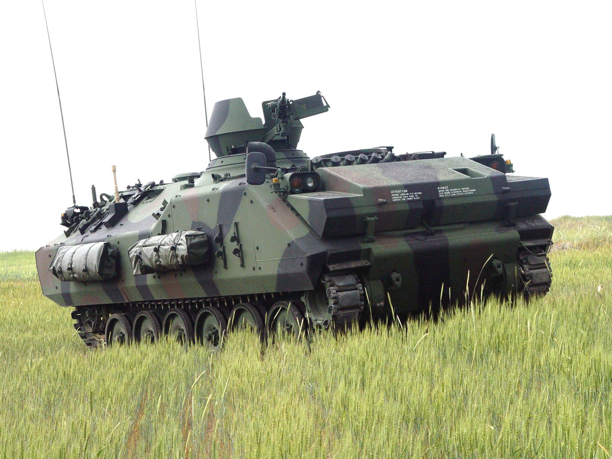
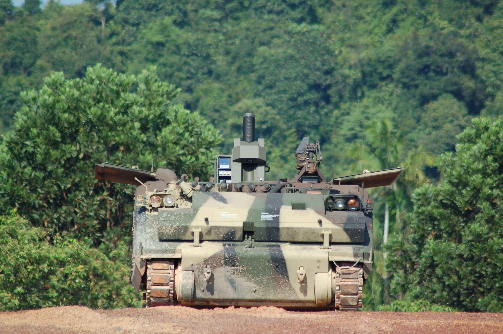
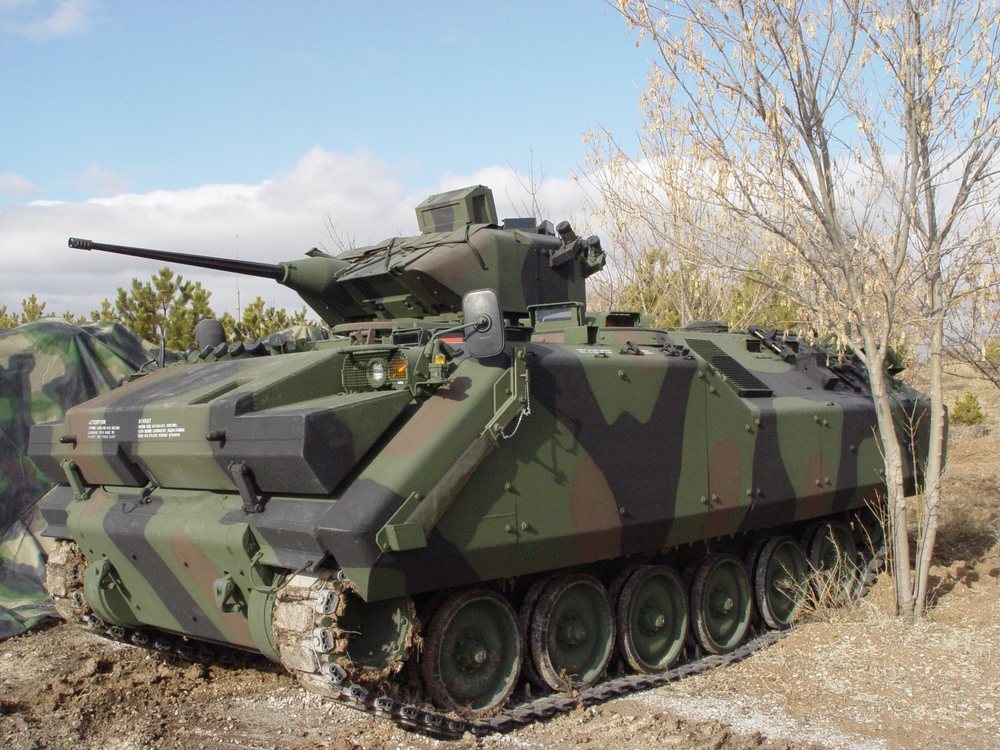

❮
❯
AKINCI ZMA, FNSS tarafından geliştirilen paletli zırhlı muharebe aracı ailesinin modernize edilmiş versiyonlarından biridir. Araç, piyade birliklerinin zırhlı koruma altında muharebe alanına taşınması ve doğrudan ateş desteği sağlaması amacıyla geliştirilmiştir.
AKINCI ZMA platformu, ACV-15 zırhlı araç ailesinin geliştirilmiş versiyonu olarak kabul edilir ve Türk Kara Kuvvetleri'nin mekanize birliklerinde kullanılmaktadır. Araç, yüksek hareket kabiliyeti, amfibi özellikleri ve modüler silah sistemleri sayesinde farklı görev rollerine uyarlanabilmektedir.
Platform; piyade taşıyıcı, komuta aracı, keşif aracı, tanksavar aracı ve hava savunma platformu gibi farklı konfigürasyonlarda üretilebilmektedir.



| Sınıf | Paletli Zırhlı Muharebe Aracı |
| Üretici | FNSS |
| Platform | ACV-15 türevi |
| Mürettebat | 3 (Komutan, Nişancı, Sürücü) |
| Taşınan Personel | 8 piyade |
| Muharebe Ağırlığı | 14-18 ton |
| Motor | Dizel motor |
| Motor Gücü | 300-350 hp |
| Güç / Ağırlık Oranı | 20 hp/ton civarı |
| Transmisyon | Tam otomatik |
| Azami Kara Hızı | 65 km/s |
| Menzil | 500 km |
| Amfibi Kabiliyet | Var |
| Azami Su Hızı | 6 km/s |
| Süspansiyon | Torsiyon bar |
| Ana Silah | 25 mm otomatik top (varyanta göre değişebilir) |
| İkincil Silah | 7.62 mm makineli tüfek |
| Kule | Uzaktan komutalı veya insanlı kule seçenekleri |
| Gece Görüş | Termal kamera ve gece görüş sistemleri |
| NBC Koruma | Var |
| Görev Rolleri | Piyade taşıyıcı, keşif, komuta, tanksavar, hava savunma |